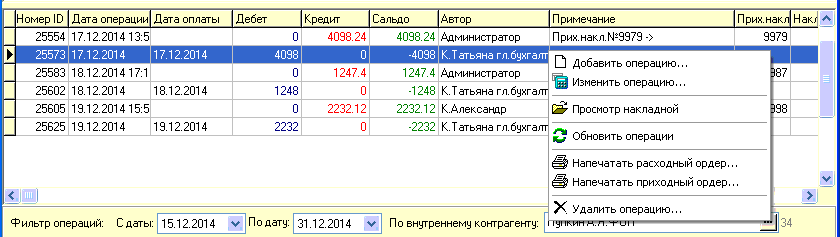
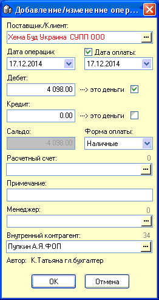
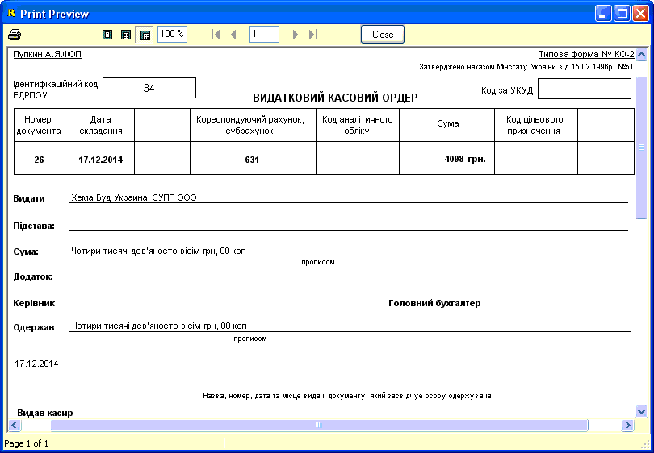
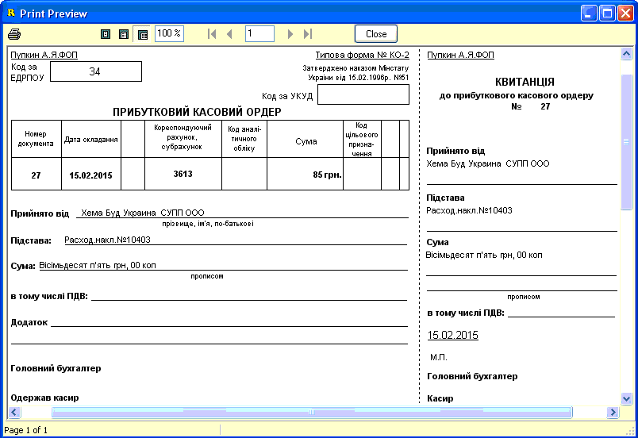

Нижняя часть формы взаиморасчетов, отображающая
список отобранных, согласно указанных внизу формы критериев поиска, операций,
позволяет работать с ними.
Рассмотрим подробнее пункты главного меню
отвечающие за работу с отобранными операциями, также эти функции дублируются
контекстным меню.

Часть операций добавляются автоматически,
например при создании приходной или расходной накладной. Таким образом
автоматически создается и задолженность, или наша перед поставщиком (кредит)
или клиента перед нами (дебет). Двойной клик мышкой на таких записях или выбор
в меню пункта "Просмотр накладной" открывает связанный документ на просмотр.
Это очень удобно, когда нужно посмотреть - а за какой товар мы должны эту
сумму ?
Другая часть операций - это добавленные вручную
операции. Они позволяют указать нашу оплату поставщику за поставленный нам
товар или внести оплату клиента за поставленный нами товар.
Указать оплату поставщику (или принять оплату от
клиента) можно двумя способами:
1. Создав отдельную запись (чаще используется,
т.к. проще в дальнейшем отслеживать правильность оплат и формировать
корректный акт сверки взаиморасчетов).
2. Отредактировав саму запись о возникновении
задолженности и указав дебет или кредит в противоположном по смыслу
окошке.
Рассмотрим окно добавления/редактирования
операций подробнее.

Поставщик/Клиент - подставляется
автоматически.
Дата операции - при добавлении автоматически
подставляется текущая дата, при редактировании - дата сохраненной
операции.
Дебет - это то что мы платим поставщику. Или то,
что должен нам клиент.
Кредит - это то что мы должны поставщику. Или то
что платит нам клиент.
Флажки-Признаки "--->это деньги" означают, что
данная операция (соответственно для дебета и для кредита) касается только
денежной оплаты, но не товара. Этот признак потом используется для выборки в
специальных отчетах в фильтре журнала возврата кредита и отчете "Деньги в
сейфе" (см.соответствующие разделы справки).
Сальдо - автоматически подсчитываемое
окошко.
Форма оплаты - наличные, безналичные, бартер.
Выберите нужный вариант.
Расчетный счет - необязательный параметр,
открывает справочник расчетных счетов.\
Примечание - необязательный параметр, до 35
символов.
Менеджер - необязательный параметр.
Внутренний контрагент - необязательный параметр,
но используется, если есть необходимость разделять учетные данные внутри
предприятия на несколько внутренних контрагентов.
Автор - автоматически присваивается по
пользователю вошедшему в программу.
.
Продолжим рассмотрение возможностей
меню:
Напечатать расходный ордер - позволяет отпечатать
подтверждающий документ на расходование денег (например, оплата поставщику за
товар). Создание возможно, только если в колонке дебет указана какая-то сумма,
указана дата оплаты и это должна быть или отдельно созданная операция или
автоматическая запись созданная нашей приходной накладной.

Напечатать приходный ордер - позволяет отпечать
подтверждающий документ на поступление денег (например, оплата клиента
поставленного нами товара). Создание возможно, только если в колонке кредит
указана какая-то сумма, указана дата оплаты и это должна быть или отдельно
созданная операция или автоматическая запись созданная нашей расходной
накладной.

Приходным и расходным ордерам присваивается
сквозная нумерация.